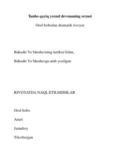

TQOrol dengizi qirg'og'ida yashovchi qariyaning qayiq yasash va o'tmishni sog'inish haqidagi dramatik rivoyati.
Ushbu asar Orol dengizi qirg'og'ida yashovchi Orol bobo ismli qariyaning hayoti va orzulari haqida hikoya qiladi. Qariya suv qurib qolgan bo'lsa-da, o'zining qayiq yasash hunarini tashlamaydi va o'tmish xotiralari bilan yashaydi.